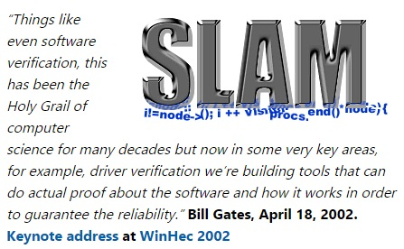
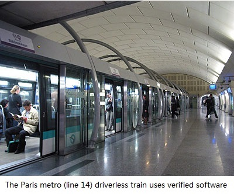

| |
|
Fu Song
Associate Professor (Tenured)
School of Information Science and Technology
ShanghaiTech University
|

|

|
|
Contact
Publications
Software
Bio
CV
Teaching
Current Students
Research
Reading Event Schedule
Deadlines
|
Biographical Sketch
|
|
Fu Song is an Associate Professor (Tenured) at School of Information Science and Technology in the ShanghaiTech University.
Fu received his Ph.D. from University Paris Diderot(Paris 7) in 2013. He was an Associate Research Professor and Lecturer at School of Computer Science and Software Engineering in the East China Normal University (2013-2016), and a visiting researcher at Computer Security Lab of Nanyang Technological University in 2014. Fu's paper (TACAS 2012) on malware detection won the EASST best paper award at ETAPS 2012.
|
| His research group develops theory and tools to aid the construction of provably dependable and secure systems. His interests are related to Formal Methods (see A Framework for Formal Analysis), cybersecurity (of software and ML/DL systems), Programming Languages and Multi-Agent systems. |
| For model checking algorithms and tools, we are developing model checkers support automated reasoning about various systems (e.g., recursive, concurrent and programs, multi-agent systems and so on), and investigating foundation problems of related automata and logics (e.g., FSTTCS 2014, CONCUR 2015, SSCI 2017).
We have developed model checker PuMoC for pushdown systems, Boolean programs, Java/C/C++ programs (e.g., CONCUR 2011&2015, ASE 2012). |
| For cybersecurity, we are working at malware modeling, detection, classification and generation with the focus on desktop/Android malwares.
We have proposed novel type-based and model-counting based approaches for verifying masked cryptographic implementations (e.g., CAV 2018, TACAS 2019, ACM TOSEM, IEEE TSE).
We have developed a model-checking based malware detector POMMADE (e.g., ESEC/FSE 2013, TACAS 2012&2013, FM 2012).
We are developing tools for vulnerability modeling and detection using (both static and dynamic) program analysis and machine/deep learning on source and binary code (e.g. ICSE 2016).
We are developing tools for phishing website detection using machine/deep learning (cf. YSECURE), and investigating defense and attack of machine/deep learning (e.g., IEEE S&P 2021).
|
| For multi-agent systems, we are working on the topics related to formal modeling, specificaiton and verification of various multi-agent systems (e.g., AAAI 2016, IJCAI 2016, AAAI 2019).
|
| For programming languages, we are working on formal semantics, type rules and static analysis framework for Rust,
an alternative to C/C++ for systems programming, and automated test-case generation techniques for Javascript programs.
|
- CS 131: Programming Languages and Compilers, Spring 2021
- CS 244: Theory of Computation, Fall 2020
- CS 131: Programming Languages and Compilers, Fall 2019
- CS 244: Theory of Computation, Spring 2019
- SI 100B&D: Introduction to Information Science and Technology, Spring 2019
- CS 100: Programming, Fall 2018
- CS 131: Programming Languages and Compilers, Fall 2018
- CS 242: Computer-Aided Verification, Spring 2018
- CS 131: Programming Languages and Compilers, Spring 2018
- SI 100B: Introduction to Information Science and Technology B, Spring 2018
- Summer Seminar: Computer-Aided Verification, 2017
- CS 131: Programming Languages and Compilers, Spring 2017
- SI 100: Introduction to Information Science and Technology, Spring 2017
- CS 100: Programming, Fall 2016
Current Ph.D Students
- Pengfei Gao(2017.09-)
- Bachelor Thesis: Static Memory Leak Detection of Rust Programs, "Excellent Graduation Thesis" award from CMUT
- Publications:
[CAV 2018]
[TACAS 2019]
[ACM TOSEM 2019]
[FoCS 2022]
[ACM TOSEM 2021]
[FoCS 2023]
[IEEE TSE 2022]
- Awards: 2018 FLoC Travel Grant, 2019 ETAPS Scholarship, 2019 Excellent Student at ShanghaiTech, 2019 CSC-IBM Excellent Chinese Student Scholarship, 2020 National Scholarship for Graduates, 2020 Merit Student at ShanghaiTech, 2020 National Scholarship for Ph.D. Graduates, 2021 Merit Student at ShanghaiTech University, 2021 Baosteel Scholarship
- Yedi Zhang(2017.09-)
- Zhe Zhao(2018.09-)
- Pu Sun(2018.09-)
- Luwei Cai(2018.09-)
- Guangke Chen(2019.09-)
|
Current Master Students
- Mingyang Liu(2020.09-)
- Qi Qin(2020.09-)
- Bachelor Thesis: Symbolic Execution based Cross-Architecture Binary Code Similary Analysis
- Publications:
[ESEC/FSE 2022]
- Yuxin Fan(2020.09-)
- Bachelor Thesis: Automated Verification of Secure Public Function in Secure Multi-party Computation Programs
- Publications:
[CAV 2022]
- Huiyu Tan(2020.09-)
- Shi Pu(2021.09-)
- Weijie Shao(2021.09-)
- Hongyi Xie(2021.09-)
- JulianAndres JiYang(2021.09-)
- Bachelor Thesis: Mitigation Techniques for JIT Timing Side-Channel Attacks
- Publications:
[ESEC/FSE 2022]
|
| Visiting Researcher and Students
|
Alumni
- Yongjie Xu(2019.09-2022.06)
- Jun Zhang(2016.09-2020.06)
- Yusi Lei(2017.09-2020.03), co-advised with Geguang Pu@ECNU
- Feng Wang(2016.09-2019.06)
- Yu Tang(MS, 2015.09-2018.06), co-advised with Geguang Pu@ECNU
- Yao Zeng(MS, 2015.09-2018.06), co-advised with Geguang Pu@ECNU
|
Current Projects
- Natural Science Foundation of China Key Program Project (PI,2021.01-2024.12): Key Problem Study for Secure Implementation of Masked Programs.
|
Past Projects
- NSFC-DFG international joint Project (co-PI,2018.01-2020.12): Detecting Anomalies in Reactive Systems.
- Natural Science Foundation of China Key Program Project (co-PI,2016.01-2020.12): Model Checking Large Scale Probabilistic and Concurrent Timed Systems.
- Natural Science Foundation of China (2016.01-2019.12): Research on Key Technologies of Information Security and Privacy Preservation for Vehicular Ad Hoc Networks and Vehicular Cloud.
- Natural Science Foundation of China (2015.01-2018.12): Research on modelling and model checking of CPS stochastic behaviors.
- CCF-NSFOCUS "Kunpeng" Program Project (PI,2017.09-2018.09): Learning based Phishing Sites: Detection, Classification and Adversary.
- Natural Science Foundation of China (PI,2015.01-2017.12): Research on Static Analysis and Detection of Malwares.
- Pujiang Talent Project of the Shanghai Science and Technology Committee (PI,2014.07-2016.06): Static Analysis of Complex Binary Executable.
- Chenguang Program of Education Commission of Shanghai Municipality (PI,2015.01-2016.12): Model Checking Algorithms for Binary Executable.
- Natural Science Foundation of China Key Program Project (2015.01-2016.12): Key Problem Study for Construction of Trustworthy China Subway Control System (iCMTCt) in Uncertain Environment.
|
 orcid.org/0000-0002-0581-2679
orcid.org/0000-0002-0581-2679 {kind=link}